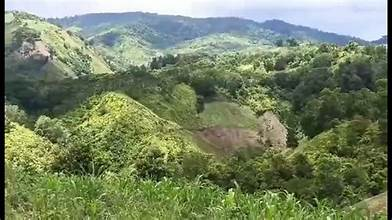
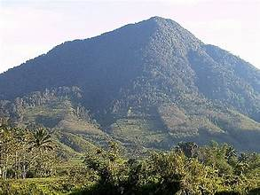
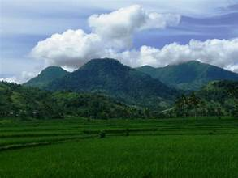
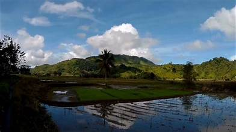
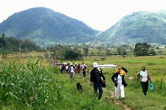

Mount Pinukis is the highest peak in Zamboanga del Sur, standing at 2,836 meters above sea level. Located in the municipality of Kumalarang, it is a popular destination for mountaineers and nature enthusiasts seeking a challenging climb and spectacular views.
Mount Pinukis rises dramatically from the surrounding lowlands, with its upper slopes cloaked in mossy forest and cloud forest. The mountain is known for its rich biodiversity, including endemic plant species such as pitcher plants, orchids, and various ferns that thrive in the cool, mist-covered upper elevations.
The standard trail to the summit starts from Barangay Lower Manangon in Kumalarang. The climb typically takes two to three days, with overnight camps set up along the route. Guides and porters from the local community are essential for navigation and logistical support.
The forests of Mount Pinukis are part of an important biodiversity corridor in Mindanao. Bird watchers have recorded numerous endemic bird species in the area, including some that are found nowhere else in the world. The mountain also harbors mammals, reptiles, and insects unique to the region.
For the Subanen people who live in the communities around Mount Pinukis, the mountain holds spiritual significance. It is associated with ancestral spirits and traditional beliefs, and the surrounding forests are considered part of their ancestral domain.
Visitors are encouraged to practice Leave No Trace principles, hire local guides, and obtain the necessary permits from the local government. Respecting the cultural significance of the mountain and the surrounding communities is essential for responsible and sustainable mountaineering.


